K-Day 005｜第一個跳進溫泉裡的人
出太陽了。
好溫暖啊。昨天的雪像做夢一樣。
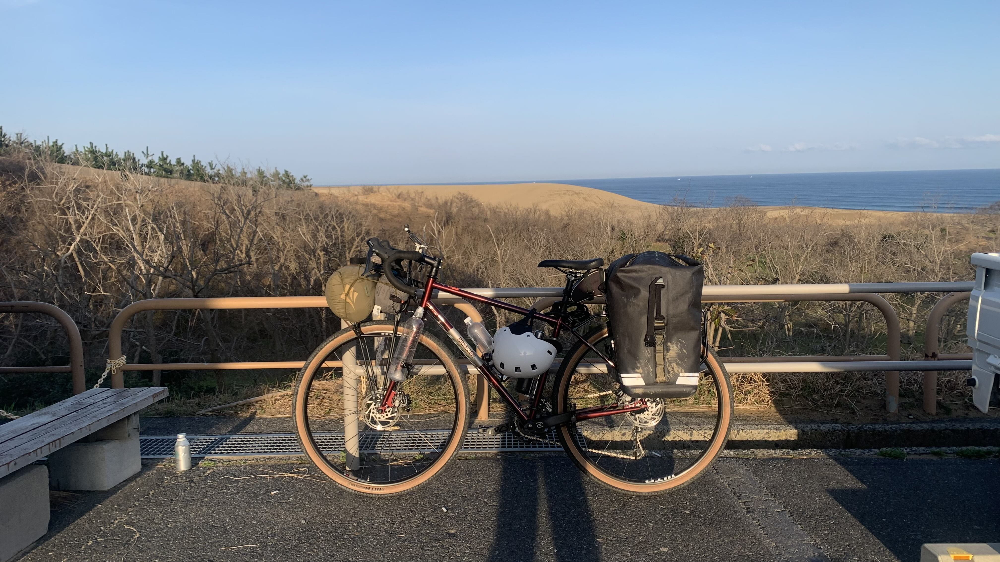
後面就是鳥取沙丘了。人類是真的需要太陽的。我確實地感受到這件事。
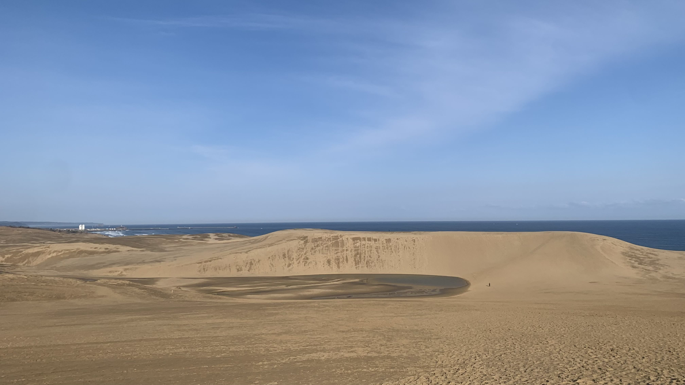
本來以為這裡就是像墾丁一樣的，但是前兩天遇到的人，只要聽說我要到鳥取，就會提到這個沙丘。
現場看真的頗爲驚人，也不是壯闊的感覺。無盡又精緻，有這樣的說法嗎？高起的是馬背沙丘，下方的藍色小水塘反射天空的顏色。怎麼會有這種精緻的設計呢。
把第二十三號牽到沙丘上拍照，正在紀錄防風固沙的松樹的女士說自行車不能上來喔。
真是抱歉，起床時在廁所遇到的打掃人員也跟我說自行車不可以進廁所啦！可以停在外面喔！
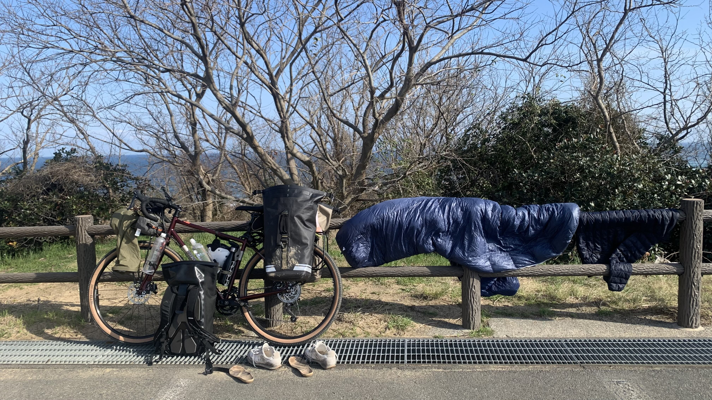
那就來吃早餐曬裝備吧。
經過三天的雨雪和汗水。辛苦各位了。
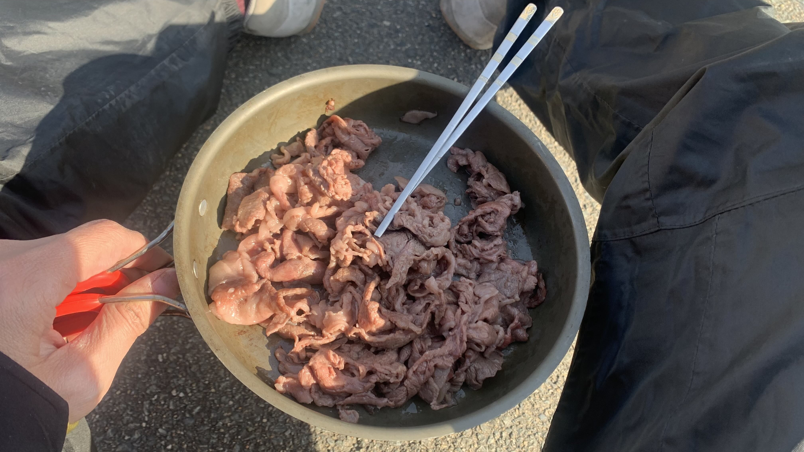
早餐是昨晚在道の駅買的但馬牛。
今日任務是觀光和幫自己及衣服洗澡。
另外必須買個小顆的爐頭和一人份鍋具。我這種嫩腳帶著四人份餐具和舊式爐具實在虐待自己的膝蓋。
離開前拍一下廁所。
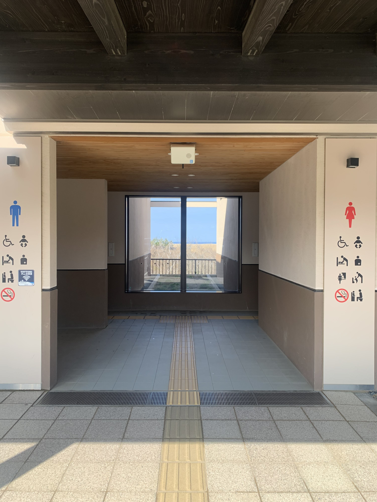
這窗戶真美。
早上十點出發去買爐具。
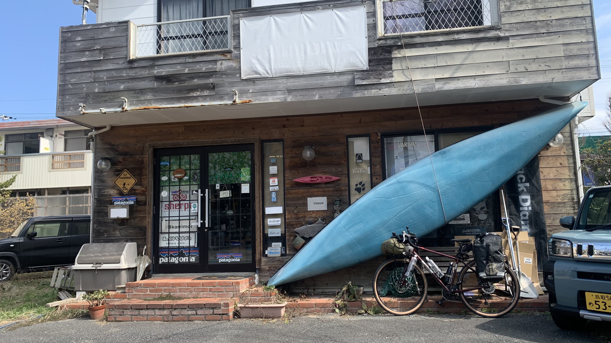
這間店很好逛，如果大家未來到鳥取可以看看。
問老闆附近可有咖啡店，推薦了一間喫茶店，是有附咖啡的。
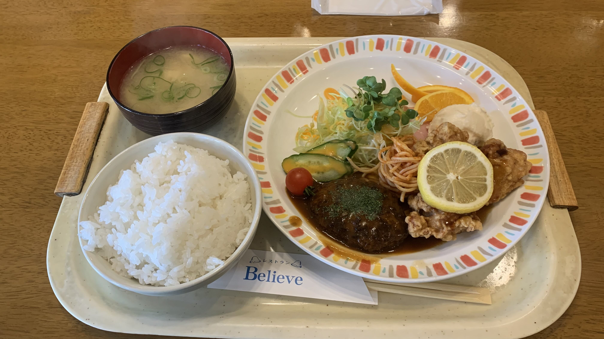
於是就順便吃了午餐。
前往今日目的地白兔海岸。
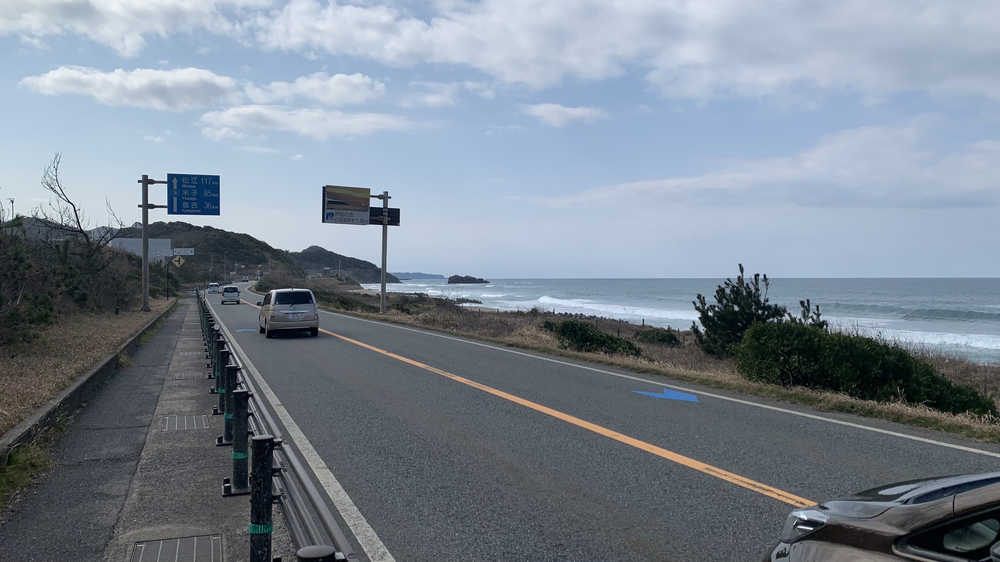
墾丁？
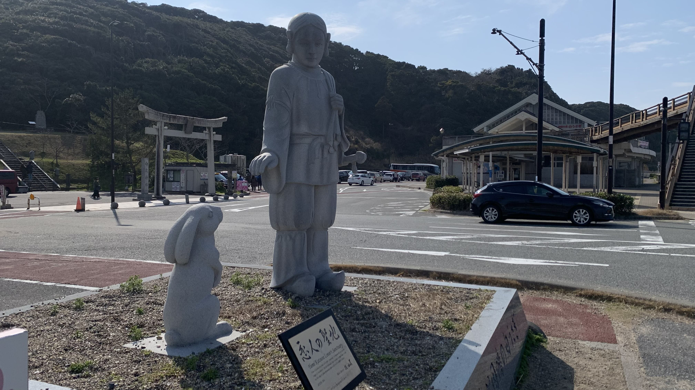
白兔海岸是兔子和天照大神的故事。
據說發生地就是在這裡。
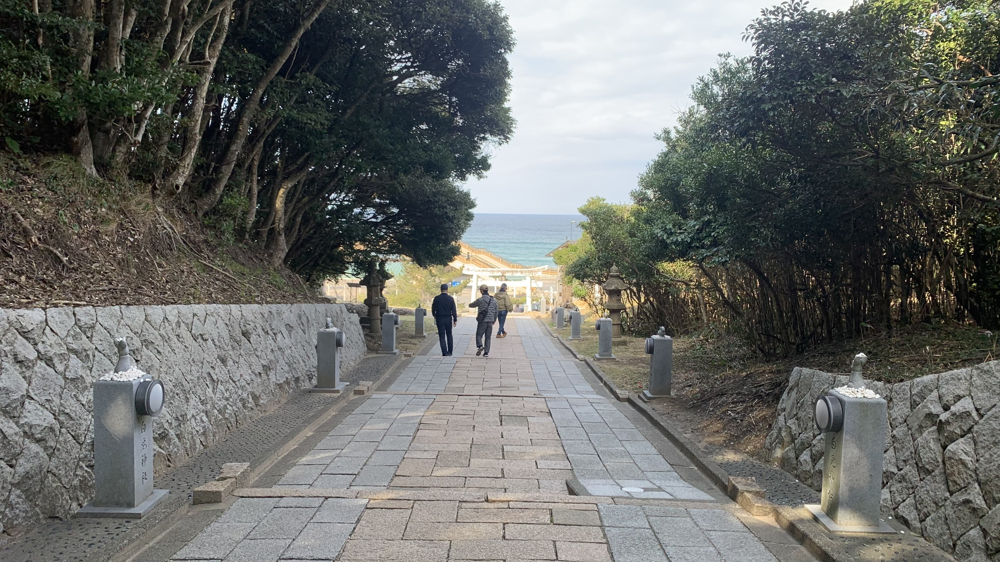
神社兩旁的兔子從下往上，按照蹲坐、跳躍，再坐下的姿勢排列的。很有逐格動畫的趣味，只是動的是自己而不是雕塑。
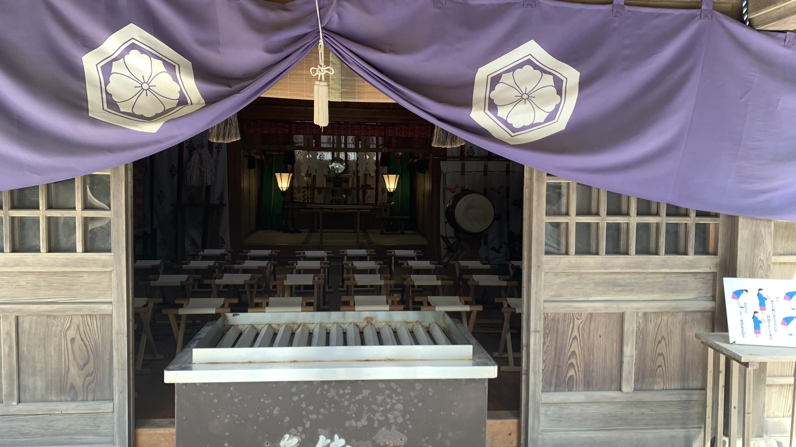
為什麼神社裡面會放一面鏡子呢？
希望有人能幫我解答。
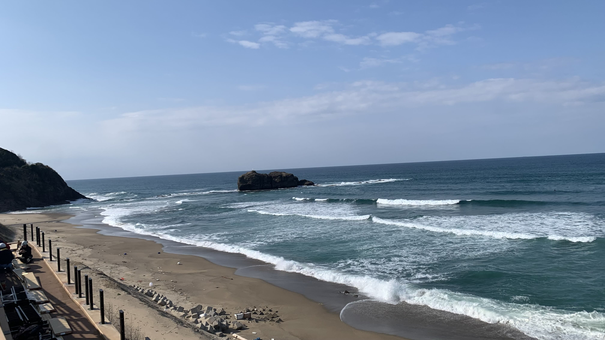
那個小島就是兔子上來的地方吧。
盯著海面看，所有的海浪突然變成一隻隻兔子不斷地往沙岸上跳，姿態就像神社樓梯上的雕像一樣。
是否只有這個海灘的海浪像兔子一樣呢？
沿著鳥取自行車道，據說有幾間餐廳和咖啡館，可以為單車騎士提供休息處。除了餐點外，似乎也有打氣桶和補水服務。
在海邊站了一下，風還是有點冷，因此到旁邊的咖啡店休息。

房子要有門這件事可以理解，但是想在上面開窗的人究竟在想什麼？

下午五點左右到了民宿。這間房間只有我一個人。
洗完衣物、輪流幫電器充電。
洗澡時我在想，雖然社會不太支持冒險的人，但是如果沒有第一個跳進冒煙溫泉池的勇者，或者沒有致力推廣擴大溫泉名聲的人，人類的歷史上會失去多少溫暖呢。
今日花費： 露營裝備 1354（台幣）、午餐 1047、住宿 2895